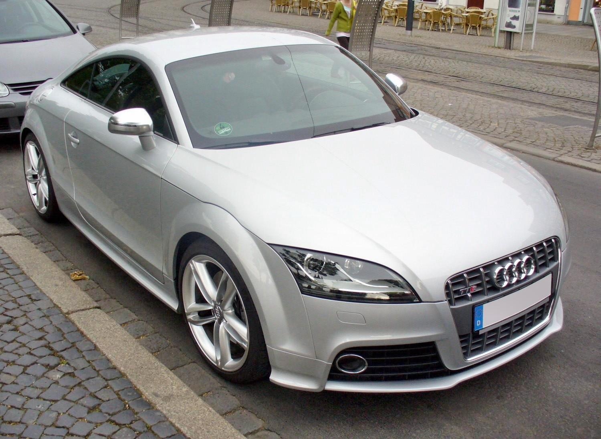

O Audi TT 2009 é um carro esportivo compacto produzido pela montadora alemã Audi. Ele foi lançado em 1998 e desde então tem sido um dos carros mais populares da Audi. O modelo de 2009 é equipado com um motor 2.0 TFSI de 211 cv, que pode atingir uma velocidade máxima de 242 km/h e acelerar de 0 a 100 km/h em 6,1 segundos1. O carro tem tração dianteira e câmbio dupla embreagem man.sequ.com modo auto de 6 marchas . A suspensão dianteira é do tipo McPherson e a traseira é do tipo multibraço, ambas com barra estabilizadora e molas helicoidais . O Audi TT 2009 tem um tanque de combustível de 55 litros e um porta-malas com capacidade de 250 litros . Além disso, o carro vem com airbags para motorista e passageiro, freios ABS, distribuição eletrônica de frenagem, ar-condicionado, travas elétricas, piloto automático, vidros elétricos dianteiros, computador de bordo, sensor de farol e farol de neblina . O preço do Audi TT 2009 varia de R$267,990.00 a R$285,990.00